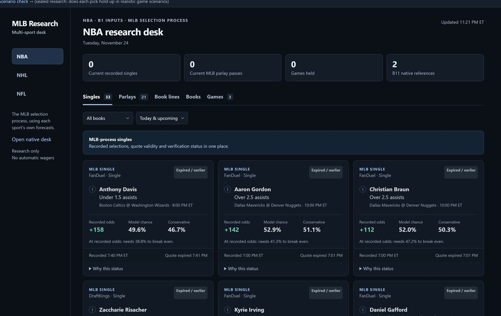
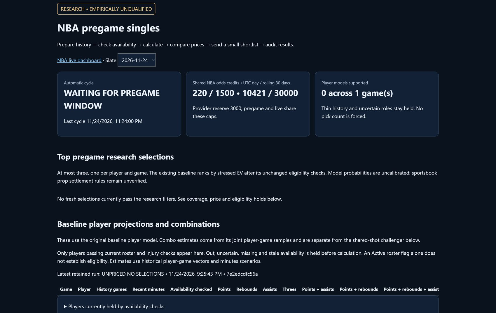
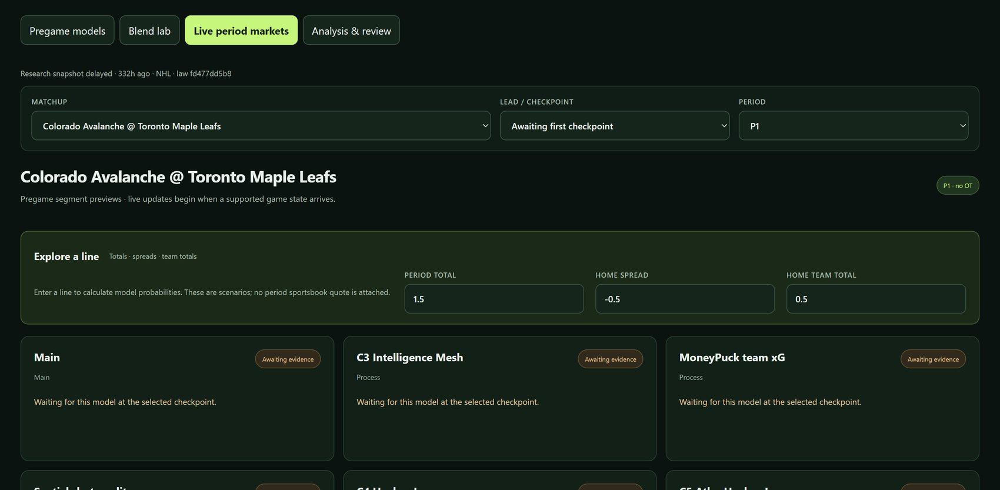
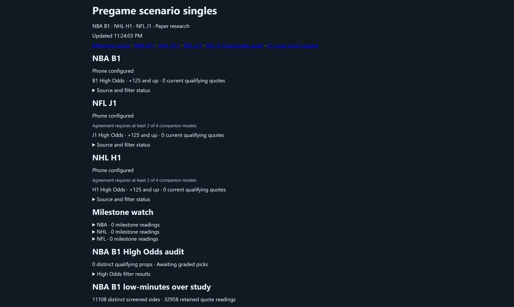

The dashboards
Thirteen of them. Every screenshot below was taken on one night — 24 November 2026 — and nothing is mocked up.





Designed, built and operated solo. It ingests live play-by-play, injury and odds data for the NBA, NHL, NFL and MLB, runs competing models against it, grades every one of them against the market, and tells me when it has broken. This page exists so the claims on my resume can be checked rather than taken on trust.
Not a notebook and not a backtest. A system that has to be awake when the games are.
Every night the platform wakes up on its own schedule, pulls the state of every game in progress, updates projections for teams and players, compares those projections against what the market is pricing, and decides whether anything is worth saying. Most of the time the answer is no, and that is the part I am proudest of — it is built to stay quiet unless the evidence clears a bar I set in advance.
It also has to look after itself. I am the only person on call, usually asleep, so the system has to know when a feed has gone stale, when a job has stopped producing, when a database is growing faster than it should, and when a vendor has started sending data it cannot trust. When it cannot trust something, it stops rather than publishing a number I might act on.
Play-by-play, box scores, injuries, rosters, confirmed lineups and goalies, plus paid and free odds — each on its own cadence.
SQLite with write-ahead logging, scheduled checkpoints, index tuning and archival. 127 databases, 234 GB.
A Main model per sport plus challengers: score-state win probability, Poisson goals, drive simulation, structural blends, period and quarter panels.
Brier scores, MAE, bias, 95% coverage and paired deltas against Main — on independently settled games only.
Calibrated probability must beat the price, worst-case stress must clear a floor, one selection per player-game.
Health checks, resource ceilings, phone alerts, written runbooks, staged installs with tested rollback, nightly golden-case replays.
Five stages, and an operations plane that spans all of them. Redacted deliberately: no hostnames, ports, credentials or vendor terms.
Thirteen of them. Every screenshot below was taken on one night — 24 November 2026 — and nothing is mocked up.



The part that matters more than the architecture: a model is a claim, and a claim needs a score.



Every source is tracked by access state. Several are deliberately switched off.

| Layer | What I use |
|---|---|
| Language & data | Python · SQLite (WAL, checkpoints, indexing) · SQL Server in my day job |
| Feeds | League play-by-play and box scores · injury, roster and confirmed-lineup sources · a paid odds API under a daily credit budget · free price ladders · exchange prices as a fair-value reference |
| Modelling | Score-state win probability · Poisson goal models · drive simulation · four-factor and shot-rate × shot-quality decompositions · Monte Carlo totals · probability calibration |
| Evaluation | Brier scores · MAE and bias by game state · 95% coverage · paired comparison against a Main reference · sealed forward tests with pre-registered sample sizes |
| Operations | Windows Task Scheduler (110 jobs) · health endpoints · push notifications · structured logs and per-run ledgers · staged installs with revert scripts · nightly golden-case replays |
| Assistance | AI coding assistance throughout, stated openly — the design decisions, the gates and the discipline are mine |
Four leagues in roughly fifteen months, each one teaching the next.
Including the parts that did not flatter me.
Stated plainly. The platform was built with heavy AI assistance, and the models do not reliably beat closing markets. I know that because every output is graded against the market and the record is kept whether or not it flatters the model. What I would bring to a team is the operational practice and the honest measurement — not a claim of edge.